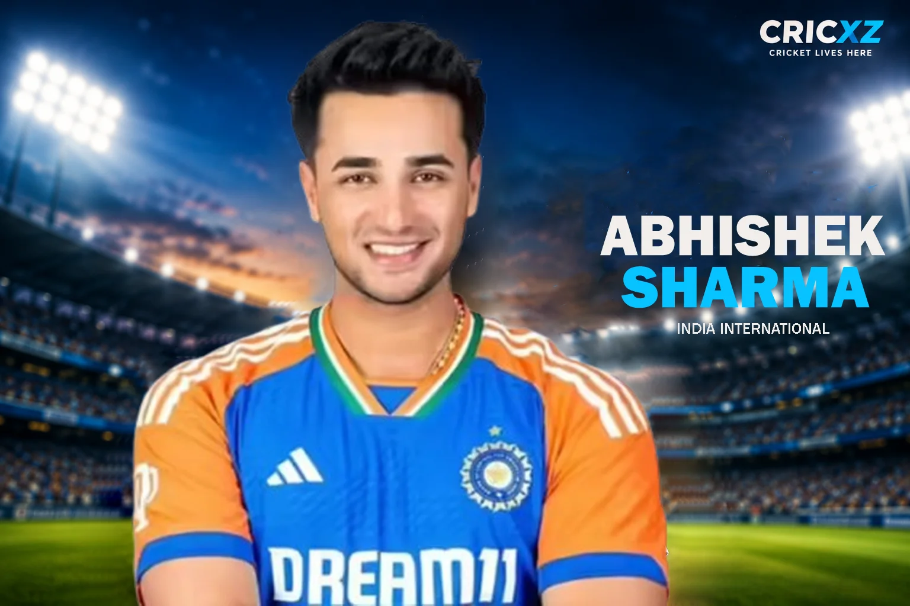

T20I
- Matches
- 62
- Batting innings
- 61
- Runs
- 1926
- Highest score
- 135
- Batting average
- 32.64
- Strike rate
- 195.14
- Hundreds
- 3
- Fifties
- 13
- Sixes
- 134

Abhishek Sharma has redefined aggressive opening in modern T20 cricket. Armed with incredible hand-eye coordination and an elite strike rate, he has become an integral part of India's white-ball setup. As of 3 October 2026, he has amassed 1,926 runs and smashed 134 sixes in T20 Internationals. His IPL record is equally impressive, featuring 2,379 runs and 144 sixes across 92 matches.
In the highly anticipated Gold Medal Match against Pakistan at Korogi Sports Park in Japan, Abhishek Sharma played a fiery knock of 61 runs off just 28 balls. He reached his half-century in a staggering 20 balls, smashing 7 massive sixes and 3 boundaries. Opening alongside 15-year-old Vaibhav Sooryavanshi, Abhishek's fearless powerplay hitting laid the foundation for India's historic Gold Medal victory.
Statistics updated: 3 October 2026
Primary career statistics source: Official ICC Rankings & Stats
Abhishek Sharma rose to global prominence following a historic IPL 2024 season with the Sunrisers Hyderabad, where he dismantled bowling attacks with ease. Earning his national call-up soon after, he proved his mettle on the international stage by smashing a 46-ball century in just his second T20I match against Zimbabwe.
As a left-handed opener, his approach is built on pure hand-eye coordination and immense power against both pace and spin. After his breathtaking 20-ball fifty in the Asian Games 2026 Final, his T20I strike rate remains among the highest for opening batters globally, cementing his reputation as India's ultimate powerplay enforcer.
6 July 2024
Against Zimbabwe at Harare Sports Club, Harare.
12 May 2018
For Delhi Daredevils against Royal Challengers Bangalore.
6 October 2017
For Punjab against Himachal Pradesh in the Ranji Trophy.
Blasted 61 off 28 balls (including a 20-ball fifty and 7 sixes) against Pakistan to help India win the Gold Medal on October 3.
Scored a breathtaking 100 off just 46 balls against Zimbabwe in his second international match.
Hit over 40 sixes in a single IPL season for SRH, operating at a strike rate above 200.
Played a crucial all-round role in India's victorious 2018 ICC Under-19 World Cup campaign in New Zealand.